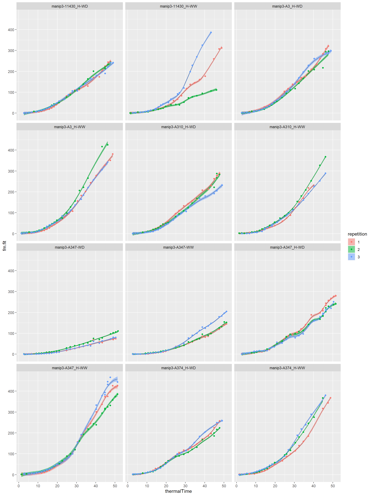
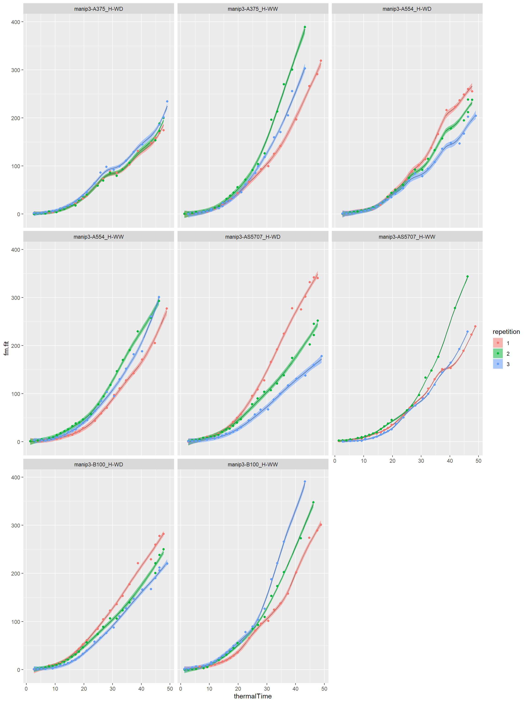

gssAnalysisReport.RmdSmoothing spline analysis of variance on each genotype-scenario of an experiment. Detection of outlier repetition if significant TT*Rep (thermal time by repetition) interaction using a Kullblack-Leibler projection (KL). I consider a genotype-scenario as outlier:
The input dataset must contain the following columns:
The five first column names are standard names extracted from the web service.
library(ggplot2) library(lubridate) library(tidyr) library(dplyr) library(gss) library(openSilexStatR) myreport<-substr(now(),1,10)
## -------------- plant3 dataset ---------------printExperiment(datain=plant3)
## Experiment: manip3
## Genotypes: 10
## [1] "A3_H" "A310_H" "11430_H" "A554_H" "A374_H" "A347_H"
## [7] "B100_H" "A375_H" "AS5707_H" "A347"
## Scenario: 2
## [1] "WW" "WD"
## Repetition-scenario: 6
## [1] "1-WW" "2-WW" "3-WW" "1-WD" "2-WD" "3-WD"
## Pots (number of plants): 60
## Line: 25
## Position: 42# Import data, here is a dataset in the phisStatR package, You have to import your own dataset # using a read.table() statement or a request to the web service # You can add some datamanagement statements... #------------------------------------------------------------------------ # Please, add the 'Ref' and 'Genosce' columns if don't exist. # 'Ref' is the concatenation of experimentAlias-Line-Position-scenario # 'Genosce' is the concatenation of experimentAlias-genotypeAlias-scenario #------------------------------------------------------------------------ mydata<-unite(plant3,Genosce,experimentAlias,genotypeAlias,scenario, sep="-",remove=FALSE) mydata<-arrange(mydata,Genosce)
# For one parameter, for example biovolume resbio<-fitGSS(datain=mydata,trait="biovolume",loopId="Genosce")
outlierbio<-printGSS(object=resbio,threshold = 0.05) klbio<-printGSS(object=resbio,threshold = NULL) cat("Detection of outlier curve with KL projection:\n")
## Detection of outlier curve with KL projection:print(outlierbio)
## Genosce ratio kl check
## 1 manip3-11430_H-WW 0.15015910 1175.7782 0.9999887
## 2 manip3-AS5707_H-WD 0.07205993 633.0729 0.9999874#------------------------------------------------ # You can export these two datasets # suppress the comments #------------------------------------------------ #write.table(outlierbio,paste0(myreport,"outlier_gss_biovolume.csv"), # row.names = FALSE,sep="\t") #write.table(klbio,paste0(myreport,"KLprojection_gss_biovolume.csv"), # row.names = FALSE,sep="\t")
I take a threshold of 0.05 for this example. We can take a more conservative threshold like 0.01 or 0.02 to detect more outlier curves…
# plot of the smoothing splines by genotype-scenario for(i in seq(1,length(unique(mydata[,"Genosce"])),by=12)){ myvec<-seq(i,i+11,1) myvec<-myvec[myvec<=length(unique(mydata[,"Genosce"]))] print(plotGSS(datain=mydata,modelin=resbio[[1]],trait="biovolume", myvec=myvec,lgrid=50)) cat("\n\n") }


## R version 4.0.2 (2020-06-22)
## Platform: x86_64-w64-mingw32/x64 (64-bit)
## Running under: Windows 10 x64 (build 18363)
##
## Matrix products: default
##
## locale:
## [1] LC_COLLATE=French_France.1252 LC_CTYPE=French_France.1252
## [3] LC_MONETARY=French_France.1252 LC_NUMERIC=C
## [5] LC_TIME=French_France.1252
##
## attached base packages:
## [1] stats graphics grDevices utils datasets methods base
##
## other attached packages:
## [1] openSilexStatR_1.1.0 gss_2.2-2 dplyr_1.0.2
## [4] tidyr_1.1.2 lubridate_1.7.9 ggplot2_3.3.2
##
## loaded via a namespace (and not attached):
## [1] nlme_3.1-148 matrixStats_0.56.0 fs_1.4.2 sf_0.9-5
## [5] gmodels_2.18.1 RColorBrewer_1.1-2 rprojroot_1.3-2 evd_2.3-3
## [9] CARBayesdata_2.2 tools_4.0.2 backports_1.1.9 rgdal_1.5-16
## [13] R6_2.4.1 KernSmooth_2.23-17 spData_0.3.8 DBI_1.1.0
## [17] colorspace_1.4-1 raster_3.3-13 withr_2.2.0 CARBayesST_3.1
## [21] sp_1.4-2 tidyselect_1.1.0 gridExtra_2.3 GGally_2.0.0
## [25] leaflet_2.0.3 compiler_4.0.2 expm_0.999-5 desc_1.2.0
## [29] labeling_0.3 scales_1.1.1 classInt_0.4-3 pkgdown_1.5.1
## [33] stringr_1.4.0 digest_0.6.25 foreign_0.8-80 rmarkdown_2.3
## [37] pkgconfig_2.0.3 htmltools_0.5.0 htmlwidgets_1.5.1 rlang_0.4.7
## [41] rstudioapi_0.11 generics_0.0.2 farver_2.0.3 crosstalk_1.1.0.1
## [45] gtools_3.8.2 spdep_1.1-5 magrittr_1.5 shapefiles_0.7
## [49] dotCall64_1.0-0 Matrix_1.2-18 Rcpp_1.0.5 munsell_0.5.0
## [53] lifecycle_0.2.0 truncdist_1.0-2 stringi_1.4.6 yaml_2.2.1
## [57] MASS_7.3-51.6 plyr_1.8.6 matrixcalc_1.0-3 grid_4.0.2
## [61] gdata_2.18.0 crayon_1.3.4 deldir_0.1-28 lattice_0.20-41
## [65] splines_4.0.2 knitr_1.29 pillar_1.4.6 boot_1.3-25
## [69] codetools_0.2-16 stats4_4.0.2 LearnBayes_2.15.1 glue_1.4.2
## [73] evaluate_0.14 data.table_1.13.0 vctrs_0.3.4 spam_2.5-1
## [77] testthat_2.3.2 gtable_0.3.0 purrr_0.3.4 reshape_0.8.8
## [81] assertthat_0.2.1 xfun_0.16 SpATS_1.0-11 e1071_1.7-3
## [85] coda_0.19-3 class_7.3-17 truncnorm_1.0-8 tibble_3.0.3
## [89] memoise_1.1.0 units_0.6-7 ellipsis_0.3.1